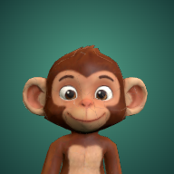

Patch’s thoughts will appear here.
Island overview
Checking on Patch…
Can’t reach Patch right now
A LITTLE NOTE FROM YOU
Letters land on Patch's coconut computer. His tablet pings him, and he writes back when he sits down to type.
Patch can choose whether to look it up. Your question may appear in his public research notes.
Sign in to talk to Patch
No letters yet. Patch would love to hear from you!
NOTES FROM THE ISLAND COMMUNITY
Leave a little hello for everyone.
Loading the board…
NEWS FROM THE ISLAND
Patch can let you know when he has something for you.
Sign in to get Patch's notifications
The app opens straight to Patch's island and keeps the island on your device, so it loads fast.